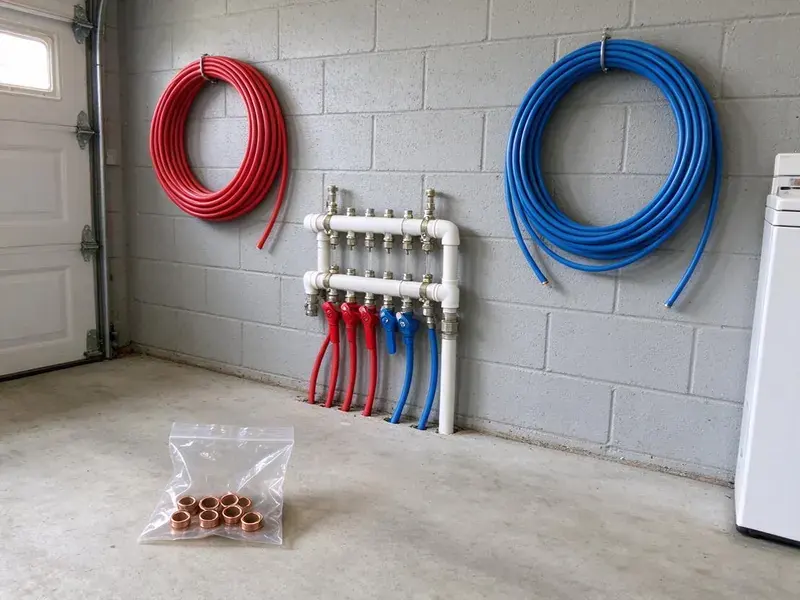

Water Line Installation in Overland Park, KS
Dealing with old, corroded or undersized water lines in Overland Park, KS? KRV Plumbing focuses on new water line installation for homes and businesses.
- Fast Scheduling and Locates
- Trenching Through Rock and Clay
- Guaranteed Workmanship
- Guaranteed Work

Dependable Water Line Installation Services in Overland Park, KS.
We handle utility locates, permits and inspections so your new line goes in with no hassle.
Water Line Installation in Overland Park, KS From the Meter to Your Home
KRV Plumbing installs main water service lines for new construction, additions and homes whose original lines have failed. We call in utility locates, trench from the meter or well to the house, lay the pipe on proper bedding and connect to your shutoff and pressure regulator. Every line is pressure tested before backfill.
Our expertise includes:
- Main Water Line Replacement & Installation
- Trenchless and traditional excavation methods
- Trenching, boring and rock breaking with proper sand bedding

Additional Plumbing Installation Services in Overland Park, KS
We install water heaters, pumps, lines, and fixtures across Overland Park, KS with careful, permitted work that passes inspection the first time.


Customers
Why Choose KRV Plumbing for Water Line Installation in Overland Park, KS?
We prioritize quality materials and precise installation techniques to prevent future issues, saving you time and money down the road.
- Quality Materials, We use only high-grade materials like PEX and copper, known for their longevity and resistance to corrosion and leaks.
- Clean Installation, Our team works efficiently and leaves your property as clean as we found it, minimizing disruption to your daily routine.
- Rock-Ready Crews, Our equipment handles hard soil and rocky ground that stops ordinary trenching jobs.
Citywide Coverage
KRV Plumbing serves every neighborhood in Overland Park, KS, so no matter where you are located, our professional water line installation services are available. We are your local plumbing partner, committed to timely and efficient service across the entire area.
Experienced Team
The team works with copper, PEX and HDPE regularly and knows the right fittings and joining methods for each. They also understand how pressure regulators, expansion tanks and softeners tie into a new main.
Safety-First Approach
Safety is our top priority during any water line installation. We follow careful protocols to protect our team, your property and anyone nearby, especially when excavating or working near utility lines.
Trusted Certified Overland Park Plumbing Services Professionals
At KRV Plumbing, we take pride in providing licensed, certified plumbing services throughout Overland Park, KS. Backed by leading industry credentials, our experienced plumbers combine technical skill with genuine customer care. Whether it is repair, installation, or maintenance, we follow strict safety and quality standards to deliver long-lasting results you can trust.
Call Us Now PHCC Plumbing Contractor Recognition
PHCC Plumbing Contractor Recognition Better Business Bureau (BBB) Accreditation
Better Business Bureau (BBB) Accreditation Angi Certified Pro
Angi Certified Pro ISO 9001 Quality Management Certification
ISO 9001 Quality Management CertificationLong-Lasting Water Line Installation Services in Overland Park, KS
PEX Water Line Installation in Overland Park
PEX, or cross-linked polyethylene, is a common choice for its flexibility, durability and resistance to corrosion and freezing. Strong winds and dry spells can pull moisture out of the soil, while sudden cold fronts can drop temperatures sharply overnight. KRV Plumbing expertly installs PEX water lines for both new construction and replacements in Overland Park. PEX offers excellent flow rates and is less prone to bursting than traditional rigid pipe, providing a long-lasting, cost-effective solution for your home's plumbing.

New Construction Water Service Lines in Overland Park
New homes, guest houses and additions need a correctly sized service line from the meter to the building. We review the plans, confirm meter size with your water provider and choose a line diameter that matches the fixture load. Most homes need a 3/4 inch or 1 inch line, while larger homes with pools and big irrigation systems often benefit from 1 1/4 inch. We coordinate the rough-in timing with your builder so the line is ready for inspection.
Commercial Water Line Services in Overland Park, KS
Commercial properties in Overland Park have unique demands for water line installation, often requiring larger diameters and more complex routing. KRV Plumbing has the expertise and equipment to handle commercial water line projects, from restaurants to office buildings. We know the importance of minimal downtime and make sure all work meets commercial building codes and operational needs.
Water Line Pressure Testing and Code Compliance in Overland Park, KS
After every water line installation, KRV Plumbing performs rigorous pressure testing to confirm there are no leaks and the system can handle normal operating pressures. We also ensure every installation complies with Overland Park and Kansas plumbing codes, including proper depth, backfill and material specifications, and we provide documentation of compliance where required.
Commercial Water Service Installation in Overland Park
Restaurants, retail suites and small commercial buildings need service lines sized for higher demand and often require backflow protection at the meter. We install larger diameter copper or HDPE lines and coordinate with your water utility on tap and meter requirements. Our plumbers schedule work to limit downtime for tenants and customers. Inspection and backflow test reports are handled before the line goes into service.
Upsizing Water Lines for Better Pressure in Overland Park, KS
Many homes built decades ago have a 3/4 inch line that cannot keep up with modern fixture loads, irrigation and pools. If your pressure drops when two showers run or the sprinklers are on, an undersized line may be the culprit. We test static and flowing pressure, then calculate whether a larger line will make a real difference. Upsizing is frequently paired with a new pressure reducing valve and main shutoff.
Water Line Upgrades & Relocation in Overland Park, KS
Sometimes, home renovations or landscaping projects require existing water lines to be upgraded or relocated. KRV Plumbing provides expert services for modifying your current water line in Overland Park, KS. Whether you need to move a line for a new addition or upgrade to a larger diameter pipe for better water pressure, our plumbers do the work safely and to code, tying it in cleanly with your home's system.

Insulating Water Lines for Kansas Weather in Overland Park, KS
Hard freezes happen every winter in Kansas, and pipes in exterior walls, garages, and crawlspaces are the first to burst. Even where winters are mild, a hard freeze can still pose a risk to exposed water lines. KRV Plumbing offers water line installation with proper insulation, especially for lines running through unheated spaces or near exterior walls in Overland Park, KS. This proactive step helps protect your pipes from freezing and bursting, safeguarding your home against costly water damage during cold snaps. We recommend insulation materials based on local conditions.
Water Line Installation Near Me in Overland Park, KS
Our team is always prepared to respond quickly to your water line needs, so residents throughout Overland Park have access to expert, dependable plumbing services right in their neighborhood. Don't hesitate to call (316) 229-8459 for assistance.
When you need water line installation near me and want it done before the next billing cycle shows another leak, call our local team. We schedule utility locates right away and can often start digging within a few days. Emergency situations get priority scheduling.
KRV Plumbing at a Glance
- Licensed and insured plumbers serving Overland Park, KS
- Same-day appointments and 24/7 emergency response
- Upfront, flat-rate pricing before work begins
- 4.9-star rated by 910+ Kansas customers
Overland Park Map
Overland Park Information
- Population
- 197,089
- Area codes
- 913/785/660
- Service area
- Overland Park and communities within 40 miles
- Nearby
- Leawood, Olathe, Prairie Village, Lenexa
Rocky fill, shifting clay and settling soil wear down buried pipe over time, so a carefully bedded new water line protects pressure and prevents hidden yard leaks in Overland Park, KS.
Expert Services
Trust our professionals for reliable KRV Plumbing solutions in Overland Park, KS.
Our Specialized Plumbing Services in Overland Park, KS
At KRV Plumbing, we provide a complete range of plumbing services across Overland Park, KS. From leak detection to full system installations, our team ensures fast, precise, and affordable service for both residential and commercial properties. Explore our core services below:


How Our Water Line Installation Process Works in Overland Park, KS
Here is what you can count on when you choose us for your water line installation in Overland Park, KS.
Request a Quote
Contact KRV Plumbing by calling (316) 229-8459 or filling out our online form to schedule an initial consultation. We will discuss your water line needs and collect the necessary information.
On-Site Assessment
Our experienced plumber will visit your Overland Park property to assess the site and determine the best routing, material and method for your new water line. We will provide a clear, transparent estimate.
Permit & Preparation
Once approved, we handle any necessary permits with local authorities and prepare the site for installation, including utility marking and excavation planning.
Frequently Asked Questions About Water Line Installation in Overland Park
Most residential water line installations run $1,800 to $5,500 depending on length, soil and material. Long runs through rocky ground, trenchless boring or copper pipe can raise costs to $6,000 to $10,000 or more.
Common signs you might need a new water line include a sudden drop in water pressure, discolored or rusty water from your faucets, consistently wet spots in your yard, unusually high water bills without a change in usage, or frequent leaks and repairs on your existing main line. These issues often point to corrosion or damage.
Type K copper, PEX and HDPE are all accepted choices. HDPE and PEX flex with soil movement and have fewer joints, while copper offers rigidity and puncture resistance.
Most residential main water line installations or replacements in Overland Park can be finished within one to three days. This timeline can vary based on the length of the line, the complexity of the excavation, weather and permit processing times.
Trenching does disturb a narrow path, but we backfill, compact and regrade when we finish. If the route crosses concrete or mature landscaping, we can talk through trenchless options.
Installing a main water line is a complex task that involves excavation, knowledge of plumbing codes, precise connections and permits. It is highly recommended to hire a licensed professional like KRV Plumbing for water line installation in Overland Park, KS, for safety, compliance and long-term reliability. DIY attempts can lead to costly mistakes and code violations.
KRV Plumbing offers a solid warranty on our water line installations, covering both parts and labor. The specific terms will be spelled out in your project agreement, giving you peace of mind about the longevity and quality of our work.
PEX is flexible, less expensive, resistant to freezing and corrosion, and has fewer fittings, which means fewer possible leak points. Copper is rigid, more expensive, has a proven track record, is naturally antimicrobial and can withstand higher temperatures. Both are solid choices, and the best option depends on your budget, property needs and local water conditions in Overland Park.
What People Are Saying About Our Plumbing Experts?

Daniel K.
A pipe burst at 11 pm and they actually answered. The plumber showed up within the hour, shut everything down, and had us back to normal the next morning. Could not ask for more.
Emergency Plumbing · Leawood, KS
Laura S.
I scheduled a water heater replacement, and the team made the process smooth and affordable. The new unit works perfectly, and they cleaned up after completing the job.
Water Heater Replacement · Gardner, KS
Robert G.
The trenchless sewer replacement saved our front yard. They walked us through the camera inspection footage first so we knew exactly what we were paying for.
Sewer Line Replacement · Prairie Village, KSSofia M.
Two new toilets installed in one visit, no mess left behind, and the tech even adjusted a faucet he noticed was dripping. Fair pricing and really friendly.
Toilet Installation · Leawood, KS
Mark T.
When our office needed drain cleaning, KRV Plumbing provided quick, reliable service. The plumber arrived on time and made sure every drain flowed perfectly before leaving. Very satisfied.
Drain Cleaning · Gardner, KS
Patricia H.
We had a slab leak that two other companies could not find. KRV Plumbing located it in under an hour, explained our options, and the price matched the quote to the dollar.
Slab Leak Repair · Lenexa, KS